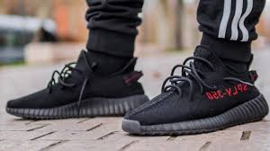
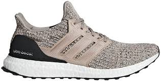
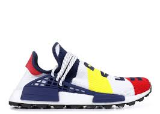

Yeezys
Adidas Yeezy is a fashion collaboration between the German sportswear brand Adidas and American designer Kanye West. The collaboration has become notable for its high-end sneakers, and the Yeezy Boost sneaker line has been considered one of the most influential sneaker brands in the world.
Ultra Boost
Ultraboost 19 took the 17 components of Ultraboost and refined them to just four: an Optimized Boost midsole, Primeknit 360 upper, Tuned Torsion Spring, and 3D Heel Frame. Each component was finely tuned to maximize the performance output of the shoe for any style of runner.
NMD's
The adidas NMD is a modern lifestyle shoe, built with cutting-edge technologies that pay homage to the lifestyle adidas archive shoes like the Micro Pacer, the Rising Star and the Boston Super. ... NMD shoes feature Primeknit uppers that provide new levels of strength, flexibility and stability atop Boost midsoles.
| Sizes 4-6 | Sizes 7-9 | Sizes 10+ | |
|---|---|---|---|
| Yeezys | $300 | $450 | $700 |
| Ultra Boost | $120 | $150 | $200 |
| NMD's | $330 | $400 | $550 |
Disclaimer: This is not given by the professionals. It is an personal thoughts.
Proudly Build in Hartford
© 2023 ShoeStore@TP. All Rights Reserved.